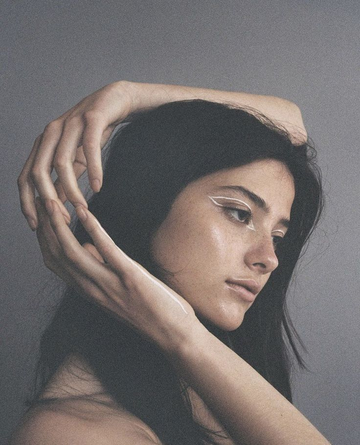

About Me
Hi, I'm Serafina Estrella Mendoza — a photographer, storyteller, and moment-chaser with over 10 years behind the lens.
Photography isn’t just my profession — it’s my way of connecting with people and places. Whether I'm documenting the quiet intimacy of a portrait, the magic of a wedding day, or the spirit of a faraway landscape, I aim to capture more than just images — I capture emotion, authenticity, and connection.
Specialties: Weddings, Portraits, Travel
Mission: To tell real, beautiful stories through honest imagery.
Awards & Recognition
- Best Wedding Photographer 2023 – Awarded by XYZ Awards for my heartfelt approach to capturing love in its most genuine form.
- Featured in National Geographic Traveler – Honored to have my travel photography spotlighted for its storytelling and soul.
- Top 10 Portrait Photographers to Watch – Named by Lens & Light Magazine for bringing emotion and artistry to every frame.